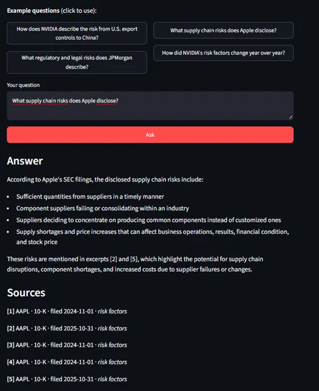

SEC filings RAG
Question answering over 10-K and 10-Q filings, with the sources each answer used.
0.78hit@5 for hybrid retrieval with re-ranking, against 0.40 for dense search (95% interval 0.68 to 0.88)

- Decision it supports
- Finding the answer in a filing hundreds of pages long, with its source.
- Who uses it
- Investment, credit and compliance analysts.
- What an error costs
- An answer without a source cannot be used; a wrong source leads to a wrong conclusion.
- How it creates value
- The right passage is in the top 5 for 80% of questions, against 43% for plain search, and every answer shows where it came from.
- Risks and limits
- The public demo shows recorded answers, because the free host cannot run the full pipeline.
Problem
Analysts need answers from long filings they can verify, not a summary with no trace back to the text.
Solution
Retrieval-augmented generation over the filings of Apple, NVIDIA and JPMorgan: hybrid dense and keyword retrieval, re-ranking, a local model through Ollama, and an evaluation that runs on GitHub Actions with RAGAS.
How it works
- 66 questions, each generated from one known chunk, so retrieval is measured exactly.
- Six retrieval strategies compared question by question with 95% intervals; the run publishes its own tables to the README.
- A public demo serves answers recorded from the real pipeline.
Results
| +0.13 | hit@5 over the dense pipeline it replaced, paired 95% interval +0.03 to +0.23 |
| 0.95 | recall@20 of the hybrid retriever (0.73 for dense search) |
| 66 | evaluation questions, run monthly on CI |
Limits
Keyword search with re-ranking scores higher (0.88) on these questions, which reuse their source's words; hybrid is kept for paraphrased questions, which the set cannot yet measure. The public demo replays recorded answers, because a free host cannot run Qdrant and Ollama.
Stack
Qdrant, Ollama, sentence-transformers, FastAPI, RAGAS